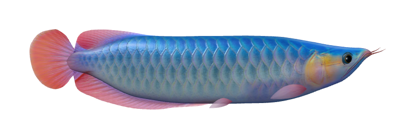
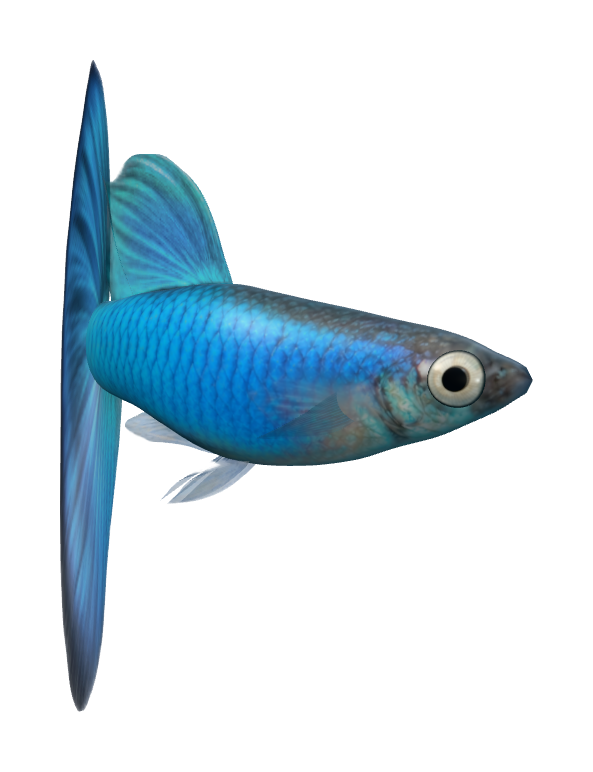
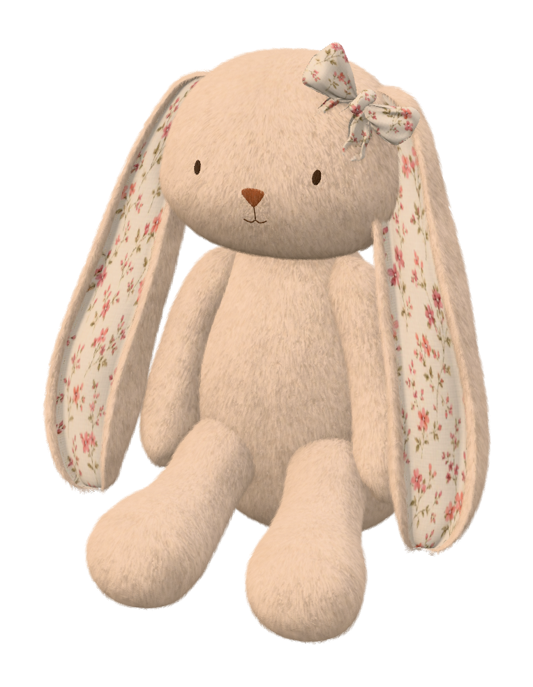
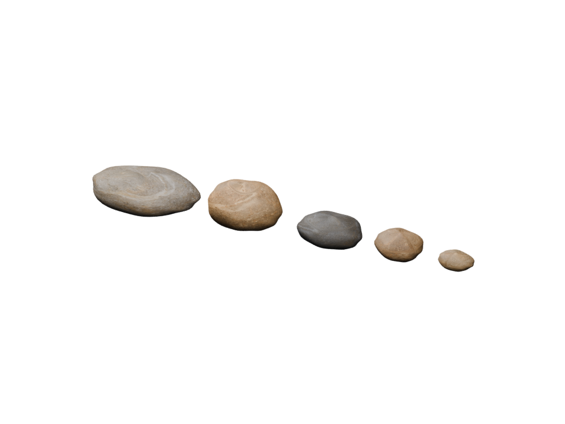
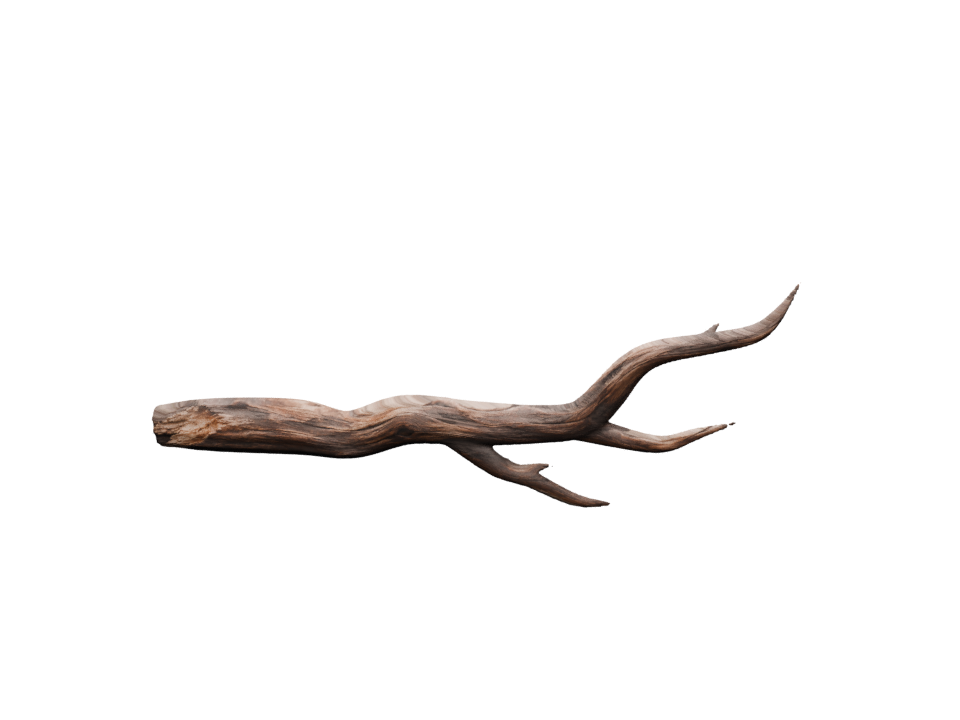
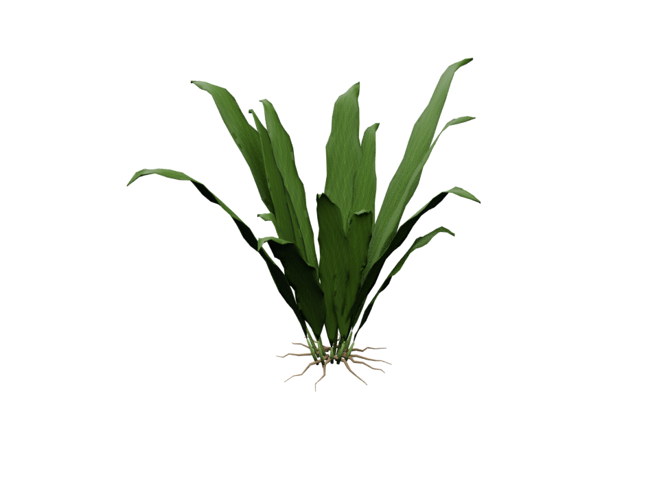
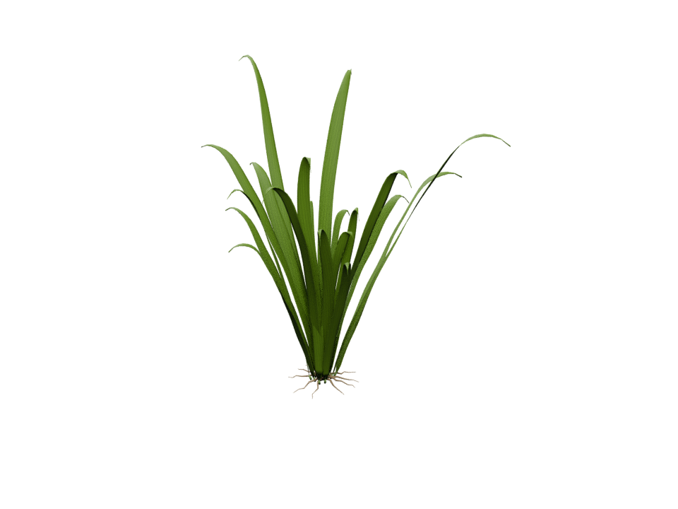
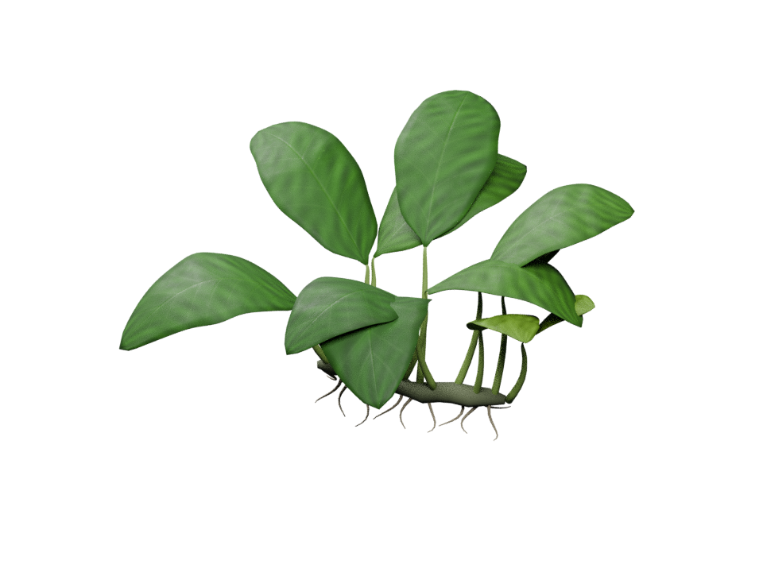

01 / 鱼类THE COLLECTION
独立 3D 资产库
鱼类、造景与静物。打开 3D 预览直接看模型；到资产说明获取 Blender、GLB 或离线 HTML。
共 14 件资产
没有找到匹配的资产
试试其他关键词，或返回全部资产。
 02 / 鱼类
02 / 鱼类

03 / 鱼类 04 / 鱼类
04 / 鱼类
 05 / 鱼类
05 / 鱼类
 06 / 鱼类
06 / 鱼类
 07 / 鱼类
07 / 鱼类

08 / 静物 09 / 造景
09 / 造景

10 / 造景
11 / 造景
12 / 造景
13 / 造景
14 / 造景